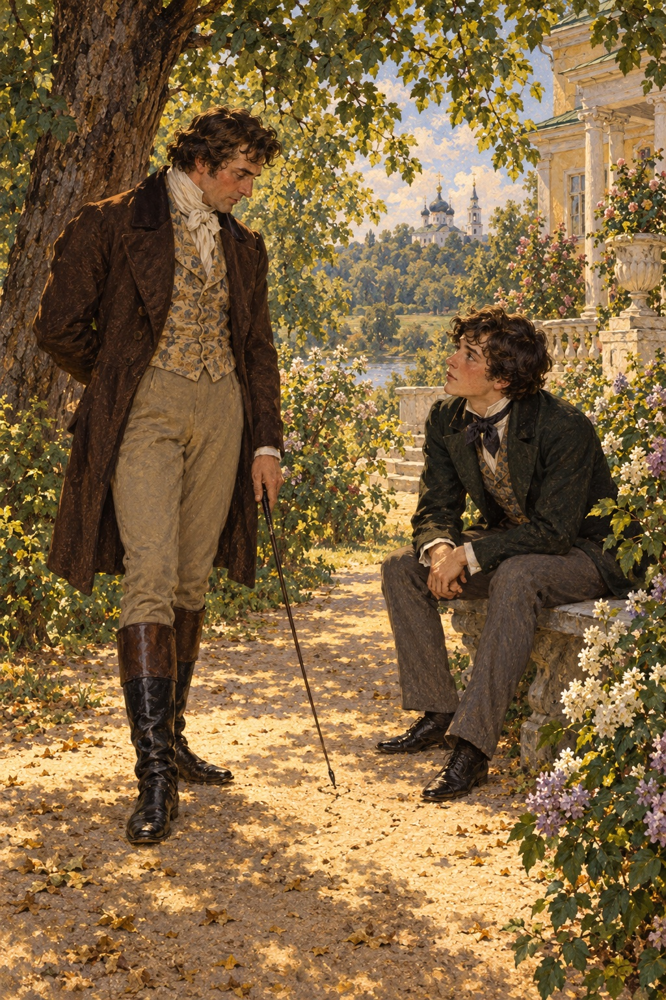

Ivan Turgenev · First Love
제8장
다음 날 아침
차를 마시러 내려가자
어머니가 나를 꾸짖었다.
생각했던 만큼 심하지는 않았다.
어머니는 어젯밤
어떻게 보냈는지 말해 보라고 했다.
나는 많은 부분을 빼고
짧게 대답했다.
모든 일이
아무 문제 없는 듯 들리게 했다.
“그래도 그 사람들은
점잖은 사람들이 아니야.”
어머니가 말했다.
“시험 준비는 안 하고
자꾸 그 집을 드나들
필요는 없어.”
어머니의 공부 걱정이
이 몇 마디로 끝나리라는 걸
나는 알고 있었다.
그래서 맞서 말하지 않았다.
차를 마신 뒤
아버지가 내 팔을 잡고
정원으로 나갔다.
자세킨네에서 본 일을
전부 이야기하게 했다.
아버지가 내게 미치는 영향은
참으로 이상했다.
우리 사이도 이상했다.
아버지는
내 교육에 거의 관여하지 않았다.
하지만 나를
모욕한 적도 없었다.
내 자유를 존중했고,
어떤 면에서는
내게 예의까지 갖췄다.
다만 나를
자기 곁으로 가까이 오게 하지 않았다.
나는 아버지를 사랑하고
우러러보았다.
이상적인 남자라고 생각했다.
아버지가 늘
나를 밀어내는 손길만
느끼게 하지 않았다면
나는 얼마나 열렬하게
아버지에게 매달렸을까.
그런데 아버지는
마음만 먹으면
한마디 말이나 몸짓 하나로
순식간에 내 믿음을 얻었다.
그럴 때 내 마음이 열렸다.
나는 아버지에게
생각 깊은 친구에게 하듯,
너그러운 스승에게 하듯
무엇이든 털어놓았다.
그러다 아버지가
갑자기 나를 떠났다.
그 손이 다시
나를 밀어냈다.
다정하고 부드럽게,
그러나 분명히 밀어냈다.
아버지도 가끔은
들뜬 기분이 되었다.
그때는 소년처럼
나와 장난치고 뛰놀았다.
아버지는 몸을 크게 움직이는
일을 좋아했다.
딱 한 번은
나를 얼마나 다정하게 안아 주었는지
울음이 날 뻔했다.
하지만 기쁨도 다정함도
흔적 없이 사라졌다.
우리 사이에 있었던 일은
꿈에서 본 것처럼
내일을 기약해 주지 않았다.
아버지의 영리하고
잘생긴 얼굴을
바라볼 때가 있었다.
그 밝은 얼굴을 보면
가슴이 떨리고
온몸이 아버지 쪽으로 기울었다.
아버지는
내 마음을 알아차린 듯
지나가며 내 뺨을
가볍게 쓰다듬었다.
그러고는 떠나거나,
다른 일을 하거나,
갑자기 몸과 얼굴을
꼼짝없이 굳혔다.
그렇게 자신을 닫을 줄 아는 사람은
아버지뿐이었다.
나는 곧 움츠러들고
마음까지 차가워졌다.
아버지의 드문 애정은
말없는 내 간청이
불러온 적이 없었다.
내가 얼마나 바라는지
아버지도 알았을 텐데,
그 순간은 언제나
예고 없이 찾아왔다.
나중에 아버지의 성격을
곱씹어 본 끝에
나는 이렇게 생각했다.
아버지에게는
나나 가정에 쏟을
마음의 자리가 없었다.
다른 것을 사랑했고,
그것을 마음껏 누렸다.
“가질 수 있는 것은
스스로 가져라.
하지만 남의 손아귀에는
잡히지 마라.
자기 자신은 자기 것으로 남겨 둬라.
삶은 거기에 달려 있다.”
아버지가 언젠가
내게 한 말이다.
또 한 번은
민주주의에 마음이 쏠린
젊은이다운 열기로
아버지 앞에서 자유를 논했다.
그날 아버지는
내가 말하는 ‘좋은 날’이었다.
그런 날에는 무엇이든
이야기할 수 있었다.
“자유라.”
아버지가 되풀이했다.
“사람에게 자유를 주는 게
무엇인지 아니?”
“뭔데요?”
“의지다.
자기 자신의 의지.
그것은 권력도 준다.
자유보다 나은 권력이지.
무엇을 원하는지 알고
끝까지 원할 줄 알아라.
그러면 자유로워지고
남에게 명령도 하게 된다.”
아버지는 무엇보다
살고 싶어 했다.
그리고 실제로 살았다.
어쩌면 삶을 누릴 시간이
길지 않으리라는 걸
예감했는지도 모른다.
아버지는
마흔두 살에 세상을 떠났다.
나는 자세킨네에 다녀온 일을
아버지에게 자세히 말했다.
아버지는 긴 의자에 앉아
채찍 끝으로 모래에 그림을 그렸다.
절반은 듣고
절반은 딴생각을 하는 듯했다.
이따금 웃으며
밝고 장난스러운 눈으로
나를 바라보았다.
짧은 질문과 반박으로
나를 더 말하게 했다.

처음에는 지나이다의 이름조차
입 밖에 내기 어려웠다.
하지만 끝내 참지 못하고
그녀를 한껏 칭찬했다.
아버지는 계속 웃었다.
그러다 생각에 잠겼고,
몸을 쭉 펴며 일어섰다.
집을 나설 때
아버지가 말을 준비하라고
시킨 것이 생각났다.
아버지는 말을 아주 잘 탔다.
유명한 조련사 레리 씨보다도
훨씬 전부터
가장 사나운 말까지
길들일 줄 알았다.
“아버지,
저도 같이 갈까요?”
“아니.”
아버지는 평소처럼
담담하면서도 부드러운
얼굴로 답했다.
“가고 싶으면 너 혼자 가.
마부에게는
나는 안 간다고 전하고.”
아버지는 내게 등을 돌리고
빠르게 걸어갔다.
나는 눈으로 따라갔다.
아버지는 대문 밖으로 사라졌다.
울타리 너머로
모자가 움직이는 게 보였다.
아버지는 자세킨네 집으로 들어갔다.
거기서 한 시간도
머물지 않았다.
그 뒤 바로 시내로 갔다가
저녁에야 돌아왔다.
점심을 먹고
나도 자세킨네로 갔다.
응접실에는
늙은 공작부인만 있었다.
그녀는 나를 보자
모자 아래로 뜨개바늘 끝을 넣어
머리를 긁었다.
그러더니
청원서 한 장을
베껴 줄 수 있느냐고
불쑥 물었다.
“기꺼이 해 드리겠습니다.”
나는 의자 끝에 걸터앉았다.
“글씨는 좀 크게 써 줘요.”
공작부인은
얼룩진 종이를 내밀었다.
“오늘 해 줄 수 있나요?”
“오늘 바로 하겠습니다.”
그때 옆방 문이
조금 열렸다.
틈으로 지나이다의 얼굴이 보였다.
창백하고 생각에 잠긴 얼굴이었다.
머리칼을 아무렇게나
뒤로 넘긴 채
커다랗고 차가운 눈으로
나를 바라보았다.
그러고는 조용히
문을 닫았다.
“지나, 지나!”
공작부인이 불렀다.
지나이다는 대답하지 않았다.
나는 공작부인의 청원서를
집으로 가져왔다.
그것을 베껴 쓰느라
저녁을 다 보냈다.